Загрузка текущих цен

Для загрузки цен в нашу смету, нам необходимо с сайта ФГИС ЦС скачать сплит-форму (сплит-форма — это сводная таблица, которая объединяет данные по сметным ценам и индексам пересчета ресурсов, опубликованные во ФГИС ЦС. Такая документация разрабатывается для конкретного региона и периода (например, сплит-форма Самарской области на 3 квартал 2025 года. Она находится на официальном сайте ФГИС ЦС — в разделе «Сметные цены и индексы изменения сметной стоимости строительства» и скачивается абсолютно бесплатно), перед этим выбрав необходимый нам регион строительства.
Для примера берем Самарскую область:
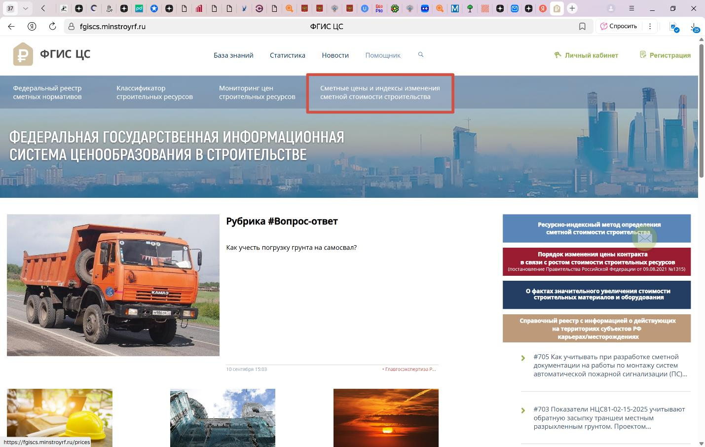
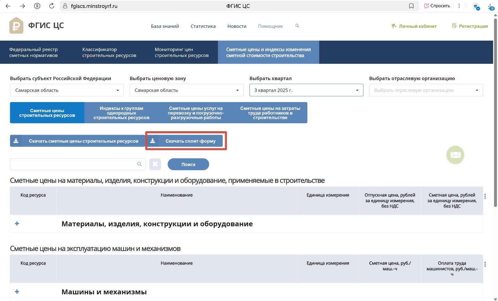
Сплит-форму скачали, для удобства переносим ее в нужную нам папку, откуда и будем ее подкреплять далее.
Переходим на вкладку Ресурсы, нажимаем кнопку Загрузка цен.
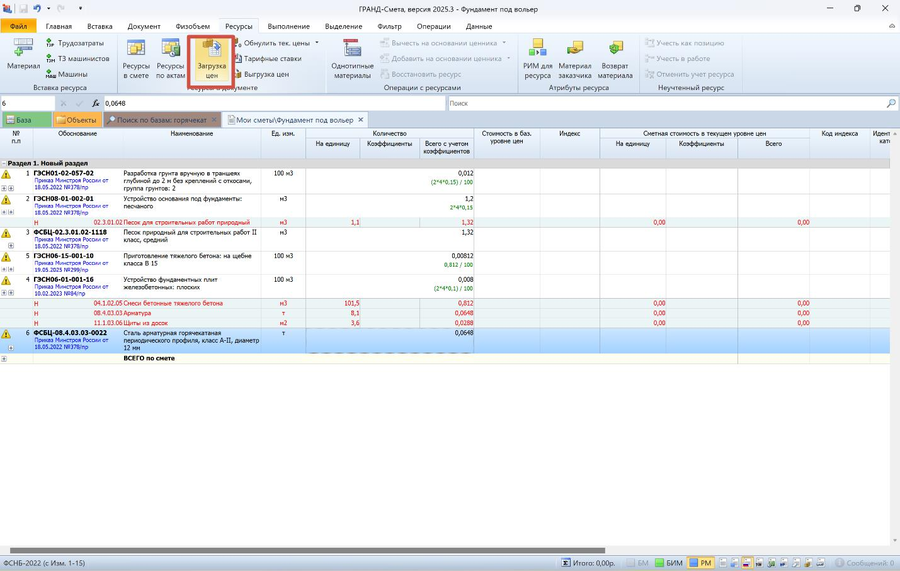
В появившемся окне нажимаем «+» и указываем путь к файлу сплит-формы, которую ранее скачали и положили в удобное нам место:
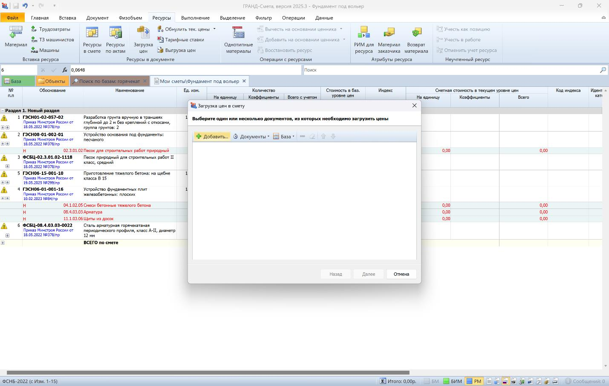
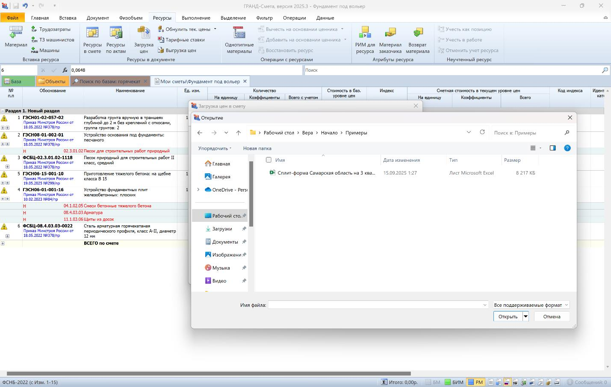
Выбираем файл, нажимаем открыть.
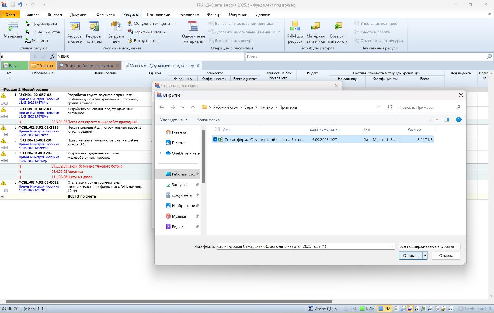
Файл появился в нашем диалоговом окне, нажимаем Далее.
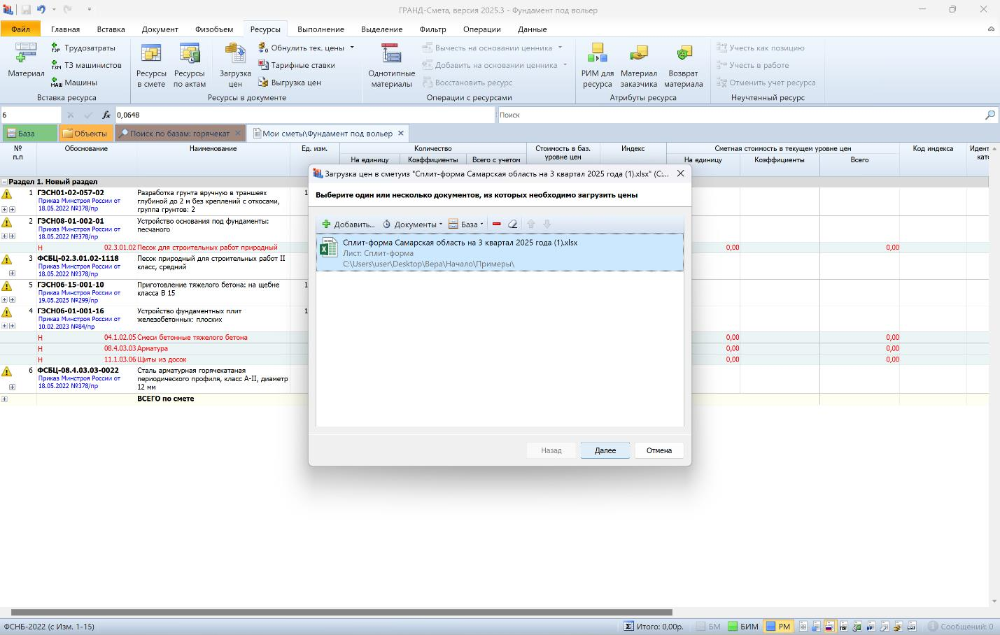
Для корректной загрузки цен из сплит-формы ставим галочки как в примере ниже и нажимаем Далее.
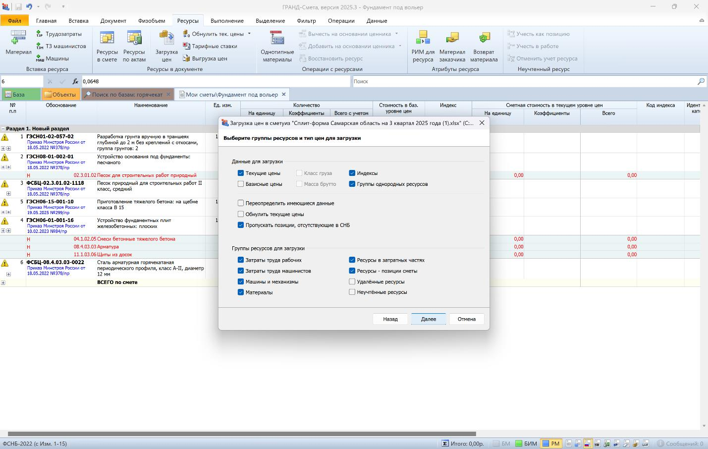
Выставляем дополнительные параметры переноса цен (строго, как в примере, иначе может быть конфликт из-за разницы наименований, код ресурса всегда постоянный!) нажимаем Выполнить.
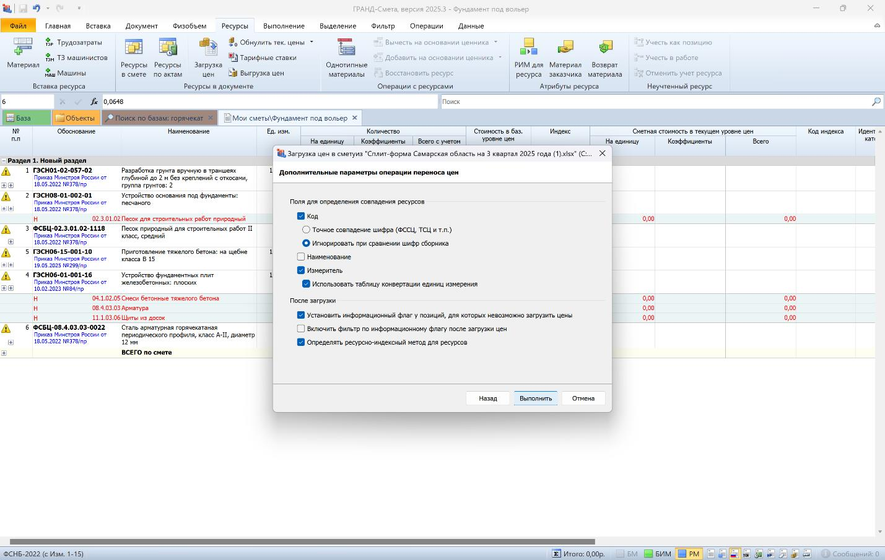
Все, цены загрузились, нажимаем Готово.
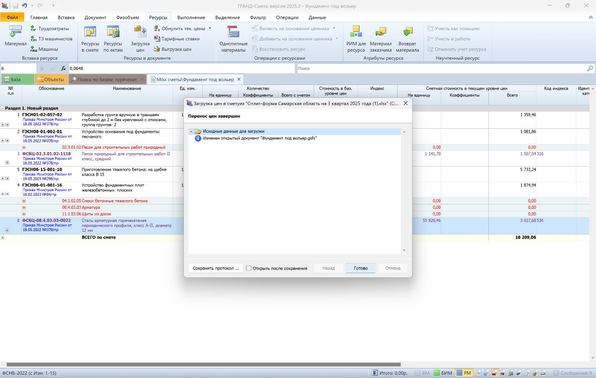
Сумма по смете сформирована, можно нажать «+» слева в строке «ВСЕГО по смете» и посмотреть, сколько денег на что требуется.
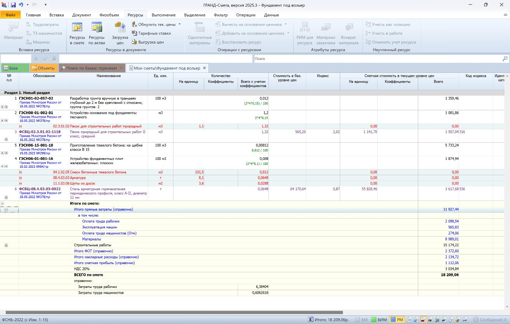
Осталось привести нумерацию в порядок и вывести смету в печатной форме в Excel.